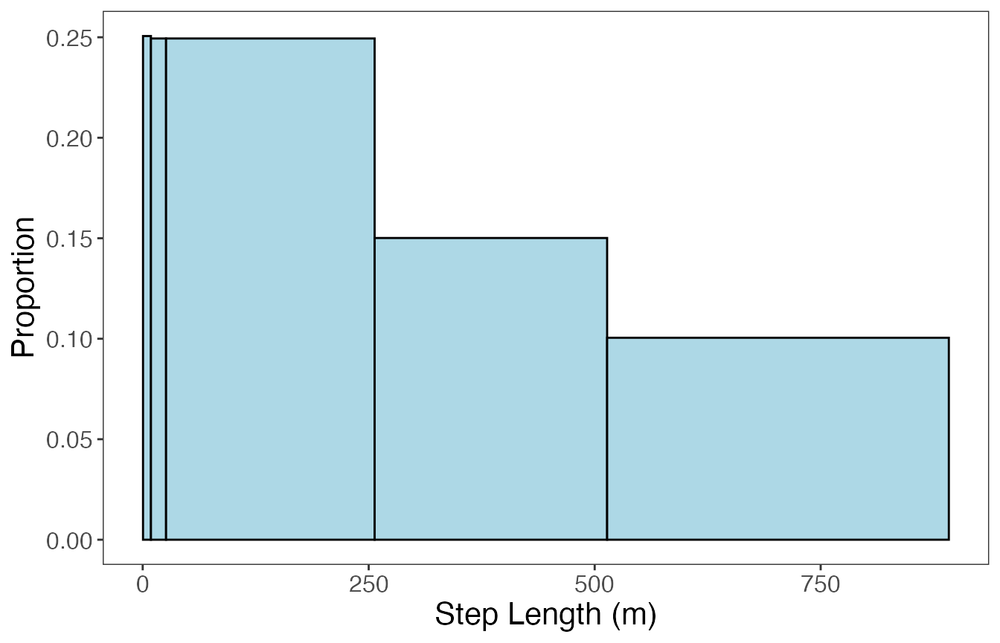
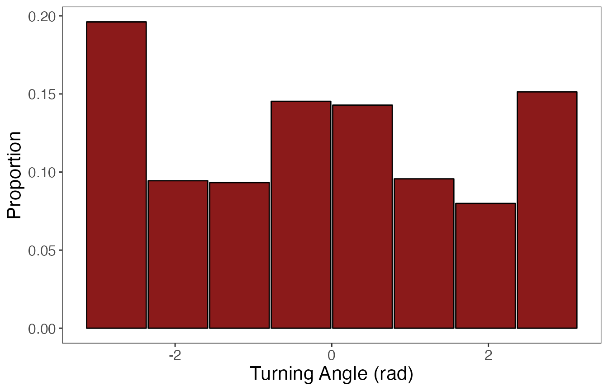
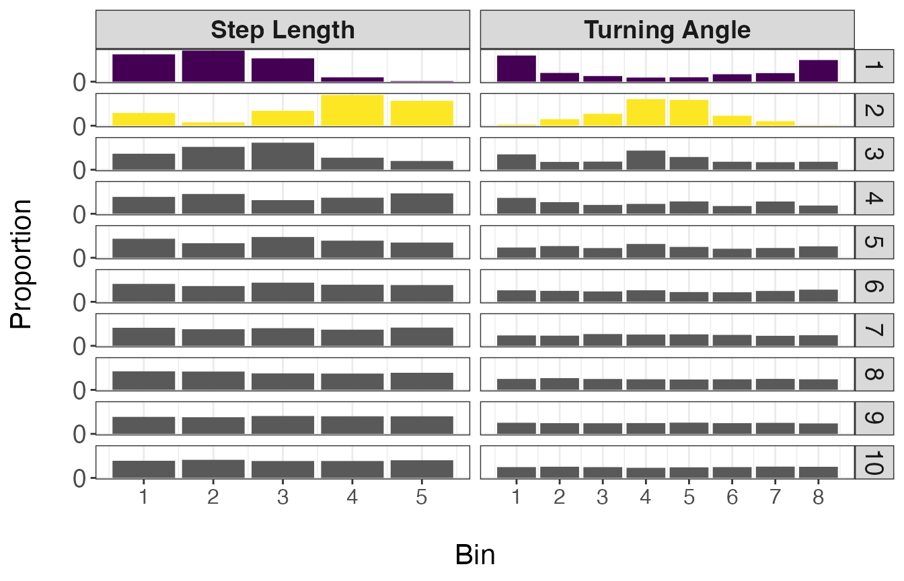
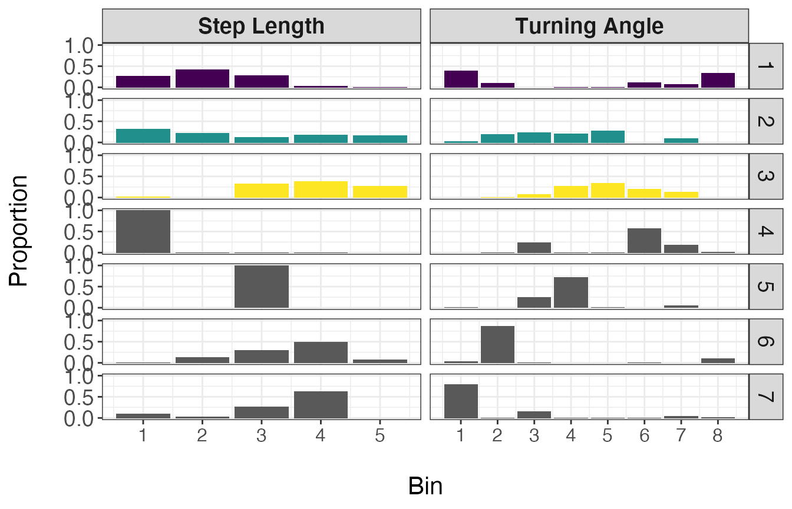
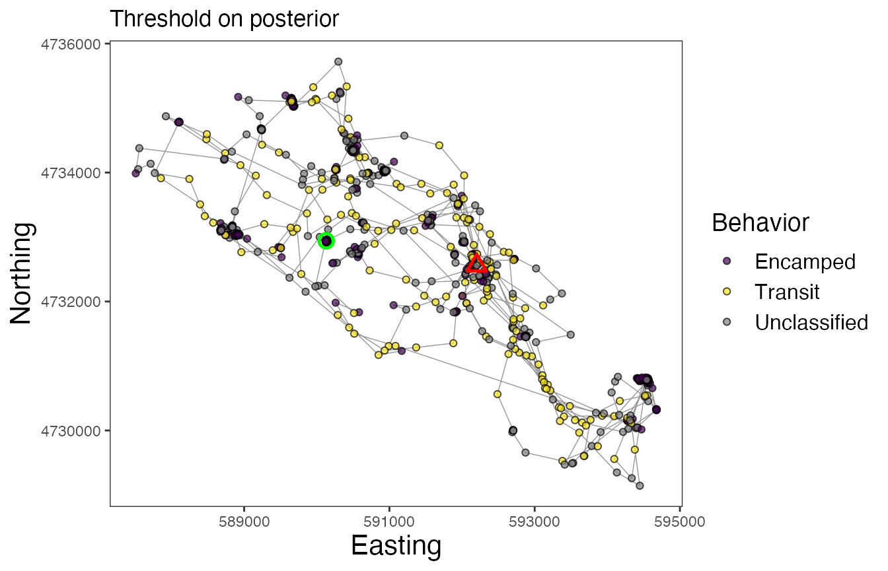

Cluster observations
18 November 2021
Source:vignettes/Cluster-observations.Rmd
Cluster-observations.RmdIntroduction
Alternative to the model that first partitions the tracks into segments and then clusters these segments into behavioral states, observations can be directly clustered into behavioral states using a different model. This (mixture) model also incorporates the non-parametric Bayesian approach that analyzes binned data streams and uses a truncated stick-breaking prior to determine the optimal number of states, but does so in a single stage.
This modeling approach provides results similar to that of state-space and hidden Markov models, but does not assume any Markov property or include a mechanistic process that drives state transitions (e.g., a correlated random walk). This model simply clusters observations together based on the discretized data streams. Therefore, this method provides fast and flexible inference on behavioral states from telemetry data, where individuals are pooled together to make population-level estimates.
Empirical example
This example will demonstrate the steps taken to prepare and analyze an empirical telemetry dataset for a single individual fisher Martes pennanti (leroy) available in the move package (LaPoint et al., 2013; Kranstauber et al., 2020) for the estimation of observation-level behavioral states.
library(bayesmove) library(move) #> Warning: multiple methods tables found for 'distance' library(dplyr) library(tidyr) library(ggplot2) library(lubridate) # Load data data(leroy) # Check data structure leroy #> class : Move #> features : 919 #> extent : -73.93067, -73.84366, 42.70898, 42.7687 (xmin, xmax, ymin, ymax) #> crs : +proj=longlat +datum=WGS84 +no_defs #> variables : 17 #> names : timestamp, eobs.battery.voltage, eobs.horizontal.accuracy.estimate, eobs.key.bin.checksum, eobs.speed.accuracy.estimate, eobs.start.timestamp, eobs.status, eobs.temperature, eobs.type.of.fix, eobs.used.time.to.get.fix, ground.speed, heading, height.above.ellipsoid, utm.easting, utm.northing, ... #> min values : 1234354605, 3596, 3.07, 3258904, 0.27, 2009-02-11 12:14:59.000, A, 13, 3, 4, 0.01, 0, -169.6, 587507.837877134, 4729143.16566605, ... #> max values : 1236158219.998, 3666, 97.02, 4291715164, 33.04, 2009-03-04 09:15:01.000, A, 35, 3, 119, 31.71, 359.79, 349, 594679.382402579, 4735720.47868847, ... #> timestamps : 2009-02-11 12:16:45 ... 2009-03-04 09:16:59 Time difference of 21 days (start ... end, duration) #> sensors : gps #> indiv. data : eobs.fix.battery.voltage, manually.marked.outlier, visible, sensor.type, individual.taxon.canonical.name, tag.local.identifier, individual.local.identifier, study.name, study.timezone #> indiv. value: 0 NA true gps Martes pennanti 74 Leroy Urban fisher GPS tracking Eastern Standard Time #> unused rec. : 1071 #> study name : Urban fisher GPS tracking #> date created: 2020-06-24 09:04:52 plot(leroy); lines(leroy)
# Convert from `Move` object to data frame leroy2<- data.frame(leroy) %>% mutate(id = "leroy") %>% rename(date = study.local.timestamp)
Prepare the data
To start off, we are going to calculate step lengths and turning angles from the data, as well as time intervals to determine the primary time step. Additionally, step length and turning angle distributions will be explored to determine how to bin these data streams. Observations will be filtered to only retain those recorded at the primary time step.
# Calculate step lengths (step), turning angles (angle), and time step (dt) leroy2<- prep_data(dat = leroy2, coord.names = c("utm.easting","utm.northing"), id = "id") # Which dt is most common? sort(table(leroy2$dt), decreasing = TRUE)[1:20] #15 min (900 s) is primary dt #> #> 901 900 902 896 898 903 907 909 890 904 906 910 892 905 874 894 925 927 865 876 #> 27 24 21 20 20 16 15 15 14 14 14 14 13 13 12 12 12 12 11 11 #Round times w/in 2 min of 15 min interval leroy3<- round_track_time(dat = leroy2, id = "id", int = 900, tol = 120, time.zone = "UTC", units = "secs") sort(table(leroy3$dt), decreasing = TRUE)[1:20] #> #> 900 1828 1773 1802 1831 2710 1705 1708 1728 1739 1741 1748 1756 1759 1762 1777 #> 826 3 2 2 2 2 1 1 1 1 1 1 1 1 1 1 #> 1780 1781 1788 1793 #> 1 1 1 1 # Create list from data frame leroy.list<- df_to_list(dat = leroy3, ind = "id") # Filter observations to keep only those recorded at 15 min (900 s) leroy.filt<- filter_time(dat.list = leroy.list, int = 900) %>% bind_rows
Now, let’s bin step lengths and turning angles for analysis by the mixture model. Data streams can be binned in a variety of ways (i.e., number of bins, binning method), so it is up to the practitioner to decide what makes sense for their data. The objective is to properly characterize the bulk of the density distribution and add extreme values into a single bin to represent the tail of the distribution (if present).
If the data stream is constrained within a range of values (i.e., 0 to 1, \(-\pi\) to \(\pi\)), it makes sense to use bins of equal widths. The number of bins should be “enough” to properly characterize any peaks in the distribution. If the data is unbounded or has a single bound (e.g., positive real numbers), then binning may be accomplished in multiple ways. One method could be to use equal bin widths until the start of the distribution’s tail, after which all extreme values are grouped into a single large bin. Additionally, users may want to use quantiles to group pre-specified proportions of the data stream into bins. In this vignette, I’ll be using equal bin widths to discretize turning angles (bounded by \(-\pi\) and \(\pi\)), but quantiles to discretize step lengths (lower bound of 0).

# Define bin number and limits for turning angles angle.bin.lims<- seq(from=-pi, to=pi, by=pi/4) #8 bins # Define bin number and limits for step lengths dist.bin.lims<- quantile(leroy.filt$step, c(0, 0.25, 0.5, 0.75, 0.90, 1)) #5 bins leroy.filt2<- discrete_move_var(leroy.filt, lims = list(dist.bin.lims, angle.bin.lims), varIn = c("step","angle"), varOut = c("SL","TA"))
##Viz discretization of params #only retain id and discretized step length (SL) and turning angle (TA) columns discr.var <- leroy.filt2 %>% dplyr::select(SL, TA) %>% bind_rows() %>% pivot_longer(cols = c(SL, TA), names_to = "var", values_to = "bin") param.prop<- discr.var %>% group_by(var, bin) %>% summarise(n=n()) %>% mutate(prop=n/nrow(leroy.filt2)) %>% ungroup() #if don't ungroup after grouping, ggforce won't work #> `summarise()` has grouped output by 'var'. You can override using the `.groups` argument. param.prop<- param.prop[-14,] param.prop[1:5, "value"]<- ((diff(dist.bin.lims)/2) + dist.bin.lims[1:5]) param.prop[6:13, "value"]<- (diff(angle.bin.lims)/2) + angle.bin.lims[1:8] #plot of discretized distrib ggplot(data = param.prop %>% filter(var == "SL"), aes(value, prop)) + geom_bar(stat = "identity", width = (diff(dist.bin.lims)-0.025), fill = "lightblue", color = "black") + labs(x = "Step Length (m)", y = "Proportion") + theme_bw() + theme(panel.grid = element_blank(), axis.title = element_text(size = 16), axis.text = element_text(size = 12))

ggplot(data = param.prop %>% filter(var == "TA"), aes(value, prop)) + geom_bar(stat = "identity", width = (diff(angle.bin.lims)-0.025), fill = "firebrick4", color = "black") + labs(x = "Turning Angle (rad)", y = "Proportion") + theme_bw() + theme(panel.grid = element_blank(), axis.title = element_text(size = 16), axis.text = element_text(size = 12))

Run the model
With the data streams in the correct format, we can now run the model to cluster observations into behavioral states.
# Only retain discretized step length (SL) and turning angle (TA) columns leroy.sub<- subset(leroy.filt2, select = c(SL, TA)) set.seed(1) # Define model params alpha=0.1 #prior ngibbs=10000 #number of Gibbs sampler iterations nburn=ngibbs/2 #number of burn-in iterations nmaxclust=10 #number of maximum possible states (clusters) present # Run model dat.res<- cluster_obs(dat=leroy.sub, alpha=alpha, ngibbs=ngibbs, nmaxclust=nmaxclust, nburn=nburn) # Inspect traceplot of log-likelihood plot(dat.res$loglikel, type = "l")
Based on this traceplot of the log-likelihood, it appears that the model converged. Now we can move on to inspect the results.
Visualize the results
## Inspect and Plot results post.seq<- (nburn + 1):ngibbs #posterior samples theta<- dat.res$theta[post.seq,] colnames(theta)<- 1:ncol(theta) theta1<- colMeans(theta) theta1<- sort(theta1, decreasing = TRUE) cumsum(theta1) #2 states seem optimal; represents > 90% of assigned observations #> 1 2 3 4 5 6 7 8 #> 0.5802831 0.9107538 0.9613538 0.9810943 0.9901168 0.9960240 0.9981285 0.9990904 #> 9 10 #> 0.9995524 1.0000000
It appears that 2 behavioral states are most likely based on the estimates from the theta matrix. To confirm that these states represent biologically interpretable movement patterns, we will also inspect the state-dependent distributions for all tested clusters/states.
# Extract bin estimates for each possible state from the `phi` matrix of the model results behav.res<- get_behav_hist(dat = dat.res, nburn = nburn, ngibbs = ngibbs, nmaxclust = nmaxclust, var.names = c("Step Length","Turning Angle")) behav.res$behav<- factor(behav.res$behav, levels = 1:nmaxclust) # Plot state-dependent distributions ggplot(behav.res, aes(x = bin, y = prop, fill = as.factor(behav))) + geom_bar(stat = 'identity') + labs(x = "\nBin", y = "Proportion\n") + theme_bw() + theme(axis.title = element_text(size = 16), axis.text.y = element_text(size = 14), axis.text.x.bottom = element_text(size = 12), strip.text = element_text(size = 14), strip.text.x = element_text(face = "bold")) + scale_fill_manual(values = c(viridis::viridis(2), rep("grey35", 8)), guide = FALSE) + scale_y_continuous(breaks = c(0.00, 0.50, 1.00)) + scale_x_continuous(breaks = 1:8) + facet_grid(behav ~ var, scales = "free_x")

Based on the resulting distributions, it appears that the first 2 states make biological sense and can potentially be classified as ‘Encamped’ and ‘Transit’ states. This is because state 1 (Encamped) exhibits low step lengths and high turning angles (near \(\pi\) radians) while state 2 (Transit) is characterized by large step lengths and low turning angles (near 0 radians). It should be noted that these broad classes of behavioral states likely include a variety of different behaviors that could not be discerned from these telemetry data alone.
Next, we will assign these 2 states to the associated observations. For observations that were assigned to one of the other eight states that will not be retained, they will be considered ‘Unclassified’. Similarly, observations that were omitted from the analysis (that were not recorded at a 15 min time step) will also be labeled ‘Unclassified’.
Assigning behavioral states to observations
There are three different ways we can assign estimates of behavioral states per observation: 1) use the MAP estimate, 2) set a threshold as the x% of samples from the posterior assigned to a single state, 3) assign states based on which was most frequent in the posterior (i.e., the mode). While all of these will be extracted below, the use of a threshold of posterior samples to assign states is the method that is recommended.
## Attribute behaviors to states and extract each of the different estimates # Using MAP estimate, threshold of 75% assignments from posterior, and most common state z.post<- as.matrix(dat.res$z.posterior) z.post2<- t(apply(z.post, 1, function(x) x/sum(x))) thresh<- 0.75 z.post3<- apply(z.post2, 1, function(x) ifelse(max(x) > thresh, which(x > thresh), NA)) z.post4<- apply(z.post2, 1, function(x) which.max(x)) ## Add states to data frame leroy.states<- leroy.filt2 %>% mutate(z.map = dat.res$z.MAP, z.post.thresh = z.post3, z.post.max = z.post4) n.states<- 2 leroy.states$z.map<- ifelse(leroy.states$z.map > n.states, NA, leroy.states$z.map) leroy.states$z.post.max<- ifelse(leroy.states$z.post.max > n.states, NA, leroy.states$z.post.max) # Identify previously filtered observations and merge into final data frame ind<- setdiff(1:nrow(leroy3), leroy.states$obs) omit.df<- leroy3[ind,] %>% mutate(obs = ind, time1 = NA, SL = NA, TA = NA, z.map = NA, z.post.thresh = NA, z.post.max = NA) leroy.states2<- rbind(leroy.states, omit.df) leroy.states2<- leroy.states2[order(leroy.states2$obs),] # Assign names to states leroy.states2<- leroy.states2 %>% mutate(across(c('z.map','z.post.thresh','z.post.max'), ~case_when(. == 1 ~ "Encamped", . == 2 ~ "Transit", is.na(.) ~ "Unclassified") )) %>% mutate(across(c('z.map','z.post.thresh','z.post.max'), factor, levels = c('Encamped','Exploratory','Transit','Unclassified') ))
Let’s inspect the number observations assigned to each state per method:
leroy.states2 %>% # for estimates based on MAP estimate group_by(z.map) %>% tally() %>% mutate(prop = n/sum(n)) #> # A tibble: 3 x 3 #> z.map n prop #> <fct> <int> <dbl> #> 1 Encamped 437 0.476 #> 2 Transit 340 0.370 #> 3 Unclassified 142 0.155 leroy.states2 %>% # for estimates based on threshold on posterior group_by(z.post.thresh) %>% tally() %>% mutate(prop = n/sum(n)) #> # A tibble: 3 x 3 #> z.post.thresh n prop #> <fct> <int> <dbl> #> 1 Encamped 365 0.397 #> 2 Transit 165 0.180 #> 3 Unclassified 389 0.423 leroy.states2 %>% # for estimates based on mode of posterior group_by(z.post.max) %>% tally() %>% mutate(prop = n/sum(n)) #> # A tibble: 3 x 3 #> z.post.max n prop #> <fct> <int> <dbl> #> 1 Encamped 541 0.589 #> 2 Transit 285 0.310 #> 3 Unclassified 93 0.101
As was expected, the method that uses a threshold (e.g., 75% of samples from posterior) resulted in the greatest proportion of Unclassified observations. However, the results from this approach are expected to be more reliable than the other two that don’t include uncertainty over the full posterior distribution (i.e., MAP estimate) or assign the state that is most frequently assigned regardless of how often that actually happens.
Now finally, let’s map the results of the model. We can inspect maps for each of the different approaches to assigning behavioral states. Note the greater number of Unclassified observations for the map using the “threshold” method, but that the Encamped and Transit states appear to be more clearly defined based on spatial patterns of movement.
# Map behavioral states for Leroy (w/ MAP estimates for states) ggplot() + geom_path(data = leroy.states2, aes(x, y), color="gray60", size=0.25) + geom_point(data = leroy.states2, aes(x, y, fill=z.map), size=1.5, pch=21, alpha=0.7) + geom_point(data = leroy.states2 %>% group_by(id) %>% slice(which(row_number() == 1)) %>% ungroup(), aes(x, y), color = "green", pch = 21, size = 3, stroke = 1.25) + geom_point(data = leroy.states2 %>% group_by(id) %>% slice(which(row_number() == n())) %>% ungroup(), aes(x, y), color = "red", pch = 24, size = 3, stroke = 1.25) + scale_fill_manual("Behavior", values = c(viridis::viridis(2), "grey50")) + labs(x = "Easting", y = "Northing", title = "MAP estimate") + theme_bw() + theme(axis.title = element_text(size = 16), strip.text = element_text(size = 14, face = "bold"), panel.grid = element_blank()) + guides(fill = guide_legend(label.theme = element_text(size = 12), title.theme = element_text(size = 14)))

# Map behavioral states for Leroy (w/ threshold of posterior samples for states) ggplot() + geom_path(data = leroy.states2, aes(x, y), color="gray60", size=0.25) + geom_point(data = leroy.states2, aes(x, y, fill=z.post.thresh), size=1.5, pch=21, alpha=0.7) + geom_point(data = leroy.states2 %>% group_by(id) %>% slice(which(row_number() == 1)) %>% ungroup(), aes(x, y), color = "green", pch = 21, size = 3, stroke = 1.25) + geom_point(data = leroy.states2 %>% group_by(id) %>% slice(which(row_number() == n())) %>% ungroup(), aes(x, y), color = "red", pch = 24, size = 3, stroke = 1.25) + scale_fill_manual("Behavior", values = c(viridis::viridis(2), "grey50")) + labs(x = "Easting", y = "Northing", title = "Threshold on posterior") + theme_bw() + theme(axis.title = element_text(size = 16), strip.text = element_text(size = 14, face = "bold"), panel.grid = element_blank()) + guides(fill = guide_legend(label.theme = element_text(size = 12), title.theme = element_text(size = 14)))

# Map behavioral states for Leroy (w/ most common states from posterior) ggplot() + geom_path(data = leroy.states2, aes(x, y), color="gray60", size=0.25) + geom_point(data = leroy.states2, aes(x, y, fill=z.post.max), size=1.5, pch=21, alpha=0.7) + geom_point(data = leroy.states2 %>% group_by(id) %>% slice(which(row_number() == 1)) %>% ungroup(), aes(x, y), color = "green", pch = 21, size = 3, stroke = 1.25) + geom_point(data = leroy.states2 %>% group_by(id) %>% slice(which(row_number() == n())) %>% ungroup(), aes(x, y), color = "red", pch = 24, size = 3, stroke = 1.25) + scale_fill_manual("Behavior", values = c(viridis::viridis(2), "grey50")) + labs(x = "Easting", y = "Northing", title = "Mode of posterior") + theme_bw() + theme(axis.title = element_text(size = 16), strip.text = element_text(size = 14, face = "bold"), panel.grid = element_blank()) + guides(fill = guide_legend(label.theme = element_text(size = 12), title.theme = element_text(size = 14)))

In these maps, the green circle represents the first location and the red triangle represents the final location. As with other models that estimate behavioral states on track segments, these results can be used for a variety of subsequent analyses, such as to determine behavior-specific habitat suitability (via RSFs/SSFs) or to calculate activity budgets.
References
Kranstauber B, Smolla M, Scharf AK. (2020). move: Visualizing and Analyzing Animal Track Data. R package version 4.0.6. https://CRAN.R-project.org/package=move.
LaPoint S, Gallery P, Wikelski M, Kays R. (2013). Animal behavior, cost-based corridor models, and real corridors. Landscape Ecology, 28(8), 1615–1630. doi:10.1007/s10980-013-9910-0.
LaPoint S, Gallery P, Wikelski M, Kays R. (2013). Data from: Animal behavior, cost-based corridor models, and real corridors. Movebank Data Repository. doi:10.5441/001/1.2tp2j43g.